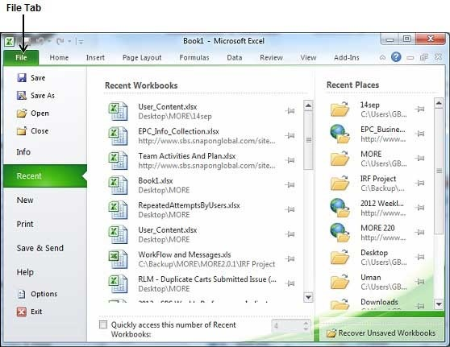
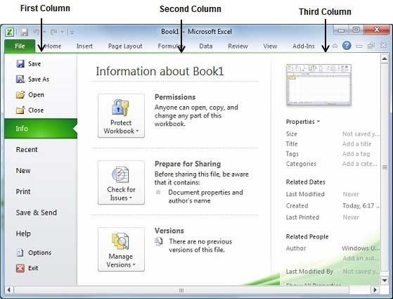

The Backstage view has been introduced in Excel 2010 and acts as the central place for managing your sheets. The backstage view helps in creating new sheets, saving and opening sheets, printing and sharing sheets, and so on.
Getting to the Backstage View is easy. Just click the File tab located in the upper-left corner of the Excel Ribbon. If you already do not have any opened sheet then you will see a window listing down all the recently opened sheets as follows −

If you already have an opened sheet then it will display a window showing the details about the opened sheet as shown below. Backstage view shows three columns when you select most of the available options in the first column.

First column of the backstage view will have the following options −
| S.No. | Option & Description |
|---|---|
| 1 |
Save If an existing sheet is opened, it would be saved as is, otherwise it will display a dialogue box asking for the sheet name. |
| 2 |
Save As A dialogue box will be displayed asking for sheet name and sheet type. By default, it will save in sheet 2010 format with extension .xlsx. |
| 3 |
Open This option is used to open an existing excel sheet. |
| 4 |
Close This option is used to close an opened sheet. |
| 5 |
Info This option displays the information about the opened sheet. |
| 6 |
Recent This option lists down all the recently opened sheets. |
| 7 |
New This option is used to open a new sheet. |
| 8 |
This option is used to print an opened sheet. |
| 9 |
Save & Send This option saves an opened sheet and displays options to send the sheet using email etc. |
| 10 |
Help You can use this option to get the required help about excel 2010. |
| 11 |
Options Use this option to set various option related to excel 2010. |
| 12 |
Exit Use this option to close the sheet and exit. |
When you click Info option available in the first column, it displays the following information in the second column of the backstage view −
Compatibility Mode − If the sheet is not a native excel 2007/2010 sheet, a Convert button appears here, enabling you to easily update its format. Otherwise, this category does not appear.
Permissions − You can use this option to protect the excel sheet. You can set a password so that nobody can open your sheet, or you can lock the sheet so that nobody can edit your sheet.
Prepare for Sharing − This section highlights important information you should know about your sheet before you send it to others, such as a record of the edits you made as you developed the sheet.
Versions − If the sheet has been saved several times, you may be able to access previous versions of it from this section.
When you click Info option available in the first column, it displays various properties in the third column of the backstage view. These properties include sheet size, title, tags, categories etc.
You can also edit various properties. Just try to click on the property value and if property is editable, then it will display a text box where you can add your text like title, tags, comments, Author.
It is simple to exit from the Backstage View. Either click on the File tab or press the Esc button on the keyboard to go back to excel working mode.